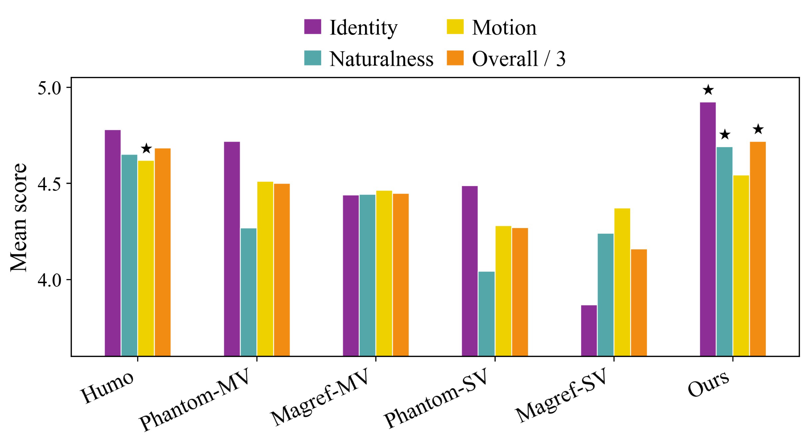

Abstract
Single-view reference-to-video methods often struggle to preserve identity consistency under large facial-angle variations. This limitation naturally motivates the incorporation of multi-view facial references. However, simply introducing additional reference images exacerbates the copy-paste problem, particularly the view-dependent copy-paste artifact, which reduces facial motion naturalness.
Although cross-paired data can alleviate this issue, collecting such data is costly. To balance consistency and naturalness, we propose Mv2ID, a multi-view conditioned framework under in-paired supervision. We introduce a region-masking training strategy to prevent shortcut learning and extract essential identity features by encouraging the model to aggregate complementary identity cues across views. In addition, we design a reference decoupled-RoPE mechanism that assigns distinct positional encoding to video and conditioning tokens for better modeling of their heterogeneous properties. Furthermore, we construct a large-scale dataset with diverse facial-angle variations and propose dedicated evaluation metrics for identity consistency and motion naturalness. Extensive experiments demonstrate that our method significantly improves identity consistency while maintaining motion naturalness, outperforming existing approaches trained with cross-paired data.
Video
Compare
Ablation
Different RoPE Comparison

Different RoPE comparison. Click the figure to open the original PDF.
User Study Result

Final user-study figure. Click the figure to open the original PDF.